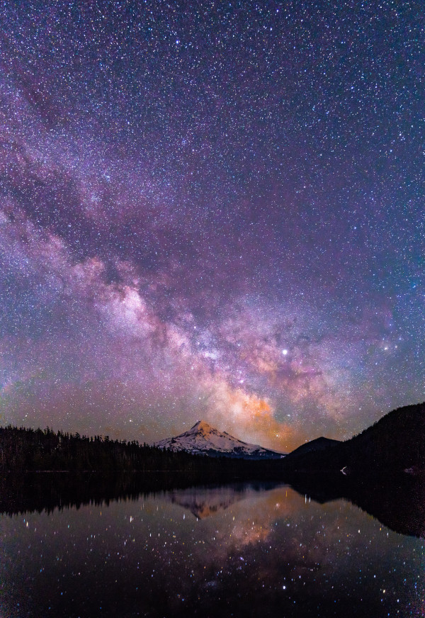

Universo
O universo é um vasto e misterioso espaço que se estende para além da nossa compreensão. Contendo bilhões de galáxias, estrelas, planetas e fenômenos cósmicos inimagináveis, ele é um verdadeiro laboratório natural que desafia nossa compreensão da física e da existência. Desde a explosão primordial do Big Bang até as órbitas graciosas dos planetas em nosso próprio sistema solar, o universo é um espetáculo de beleza e complexidade que inspira a curiosidade e a exploração incessante dos cientistas e dos seres humanos em geral.
À medida que expandimos nossos horizontes e investigamos os segredos do espaço sideral, descobrimos não apenas a vastidão infinita do universo, mas também nossa própria pequenez em relação a ele. O universo nos desafia a explorar, aprender e contemplar nosso lugar nele, ao mesmo tempo em que nos fornece insights profundos sobre a natureza fundamental da realidade e da vida. É um reino de maravilhas cósmicas que nos lembra constantemente de quão infinitamente intrigante e enigmático é o mundo em que vivemos.
Algumas curiosidades sobre o universo:
- O universo é vasto: O universo observável tem um diâmetro estimado de cerca de 93 bilhões de anos-luz, tornando-o incrivelmente vasto e expansivo.
- Muitas galáxias: Há mais de 100 bilhões de galáxias no universo observável, cada uma contendo bilhões de estrelas.
- A expansão cósmica: O universo está em constante expansão desde o Big Bang, fazendo com que as galáxias se afastem umas das outras.
- O tempo de luz: A luz do Sol leva cerca de 8 minutos e 20 segundos para chegar à Terra, o que significa que quando olhamos para o Sol, estamos vendo-o como ele era há mais de 8 minutos.
- Buracos negros: Buracos negros são regiões do espaço onde a gravidade é tão intensa que nada pode escapar de sua atração, nem mesmo a luz.
- Estrelas de nêutrons: Estrelas de nêutrons são os núcleos colapsados de estrelas massivas e são incrivelmente densas. Uma colher de chá de material de uma estrela de nêutrons pesaria bilhões de toneladas na Terra.
- Matéria escura: Acredita-se que a matéria escura, uma forma de matéria invisível, compõe cerca de 27% da massa e energia total do universo, mas sua natureza exata é ainda um mistério.
- Raios cósmicos: Partículas subatômicas de alta energia, conhecidas como raios cósmicos, bombardeiam constantemente a Terra vindo do espaço profundo.
- Exoplanetas: Astrônomos já descobriram milhares de exoplanetas (planetas fora do nosso sistema solar) e continuam a procurar por mundos potencialmente habitáveis.
- A idade do universo: Acredita-se que o universo tenha aproximadamente 13,8 bilhões de anos, de acordo com observações detalhadas do fundo cósmico de micro-ondas, uma radiação remanescente do Big Bang.